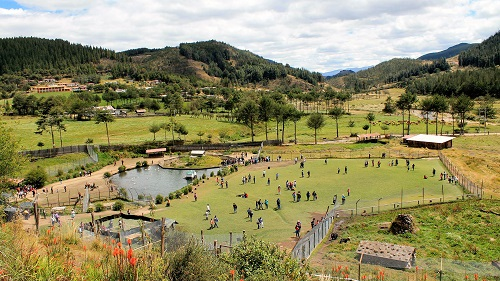
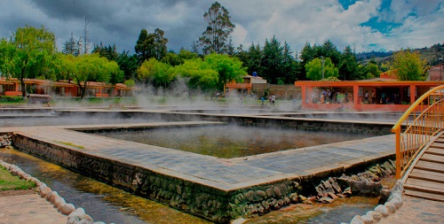
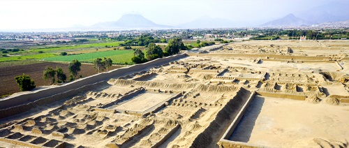

| CAJAMARCA | |||||
|---|---|---|---|---|---|
| Lugar | m.s.n.m | Musica | Foto Referencial | Costumbres | Otros |
| Granja Porcon | 2900 m.s.n.m |  | Cruces de Porcon | Zoologico y Turismo vivencial | |
| Baños del Inca | 2700 m.s.n.m |  | Fiesta de Huanchaco | Carnavales y Principal centro turistico de Cajamarca | |
| TRUJILLO | |||||
|---|---|---|---|---|---|
| Lugar | m.s.n.m | Musica | Foto Referencial | Costumbres | Otros |
| Chan-Chan | 500 m.s.n.m |  | Fiesta de la Primevera | Edificaciones y Museos con huacos representativos | |
| Huaca Del Sol | 700 m.s.n.m |  |
Fiesta de la Primavera | Edificaciones y Museos con huacos representativos | |